Medieval World
CE 5th century... The Europeans lived in fear of the
CE 5th century... The Europeans lived in fear of the
CE 5th century... The Europeans lived in fear of the
CE 5th century... The Europeans lived in fear of the
CE 5th century... The Europeans lived in fear of the
constant attacks by the Germanic tribes of Northern
constant attacks by the Germanic tribes of Northern
constant attacks by the Germanic tribes of Northern
constant attacks by the Germanic tribes of Northern
constant attacks by the Germanic tribes of Northern
Europe. The intruding attackers looted cities and
Europe. The intruding attackers looted cities and
Europe. The intruding attackers looted cities and
Europe. The intruding attackers looted cities and
Europe. The intruding attackers looted cities and
massacred people. The natives approached their kings for
massacred people. The natives approached their kings for
massacred people. The natives approached their kings for
massacred people. The natives approached their kings for
massacred people. The natives approached their kings for
protection, but the kings were helpless.
protection, but the kings were helpless.
protection, but the kings were helpless.
protection, but the kings were helpless.
protection, but the kings were helpless.
Finally, the kings arrived at a solution. They declared
Finally, the kings arrived at a solution. They declared
Finally, the kings arrived at a solution. They declared
Finally, the kings arrived at a solution. They declared
Finally, the kings arrived at a solution. They declared
that pieces of land would be given as reward to those
that pieces of land would be given as reward to those
that pieces of land would be given as reward to those
that pieces of land would be given as reward to those
that pieces of land would be given as reward to those
who protect the life and wealth of the people. Several
who protect the life and wealth of the people. Several
who protect the life and wealth of the people. Several
who protect the life and wealth of the people. Several
who protect the life and wealth of the people. Several
chivalrous lords came forward to protect the people and
chivalrous lords came forward to protect the people and
chivalrous lords came forward to protect the people and
chivalrous lords came forward to protect the people and
chivalrous lords came forward to protect the people and
they were rewarded as promised. They, in turn, distributed
they were rewarded as promised. They, in turn, distributed
they were rewarded as promised. They, in turn, distributed
they were rewarded as promised. They, in turn, distributed
they were rewarded as promised. They, in turn, distributed
these pieces of land among others who were loyal to them
these pieces of land among others who were loyal to them
these pieces of land among others who were loyal to them
these pieces of land among others who were loyal to them
these pieces of land among others who were loyal to them
and were ready to render their service. The land so
and were ready to render their service. The land so
and were ready to render their service. The land so
and were ready to render their service. The land so
and were ready to render their service. The land so
obtained was handed over to some others on the same
obtained was handed over to some others on the same
obtained was handed over to some others on the same
obtained was handed over to some others on the same
obtained was handed over to some others on the same
conditions. Farmers were engaged to work in this land
conditions. Farmers were engaged to work in this land
conditions. Farmers were engaged to work in this land
conditions. Farmers were engaged to work in this land
conditions. Farmers were engaged to work in this land
throughout the day. The life of these farmers was not
throughout the day. The life of these farmers was not
throughout the day. The life of these farmers was not
throughout the day. The life of these farmers was not
throughout the day. The life of these farmers was not
better than that of the slaves.
better than that of the slaves.
better than that of the slaves.
better than that of the slaves.
better than that of the slaves.
Page 23
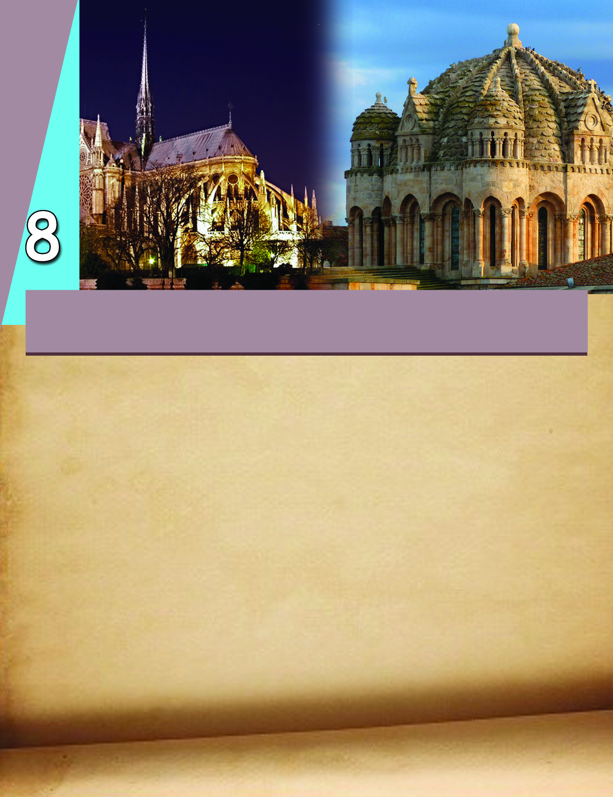
Page 24


Social Science
120
Medieval World
The above description gives us some hints about the European
history between the 5th and the 15th centuries CE. In world
history, this period is known as the medieval period. We have
discussed the history of medieval India in the previous chapter.
What information about the history of medieval Europe can you
gather from the given description?
The Europeans constantly faced attacks
The King distributed pieces of land to the lords who helped
in defending the attacks.
From the diagram given below various strata of medieval
European society can be identified.
King
Lords
Lesser Lords
Farmers
The king enjoyed the highest status in the society. He was the
sole owner of the entire land. He distributed land among the
lords. In return, the lords offered military service. The lords in
Page 25


Standard VI
121
Medieval World
turn gave a part of their land to lesser lords and demanded services
from them.
This social system in medieval Europe, formed on the basis of
land ownership, is called 'feudalism'. The farmers stood at the
lowest stratum of the feudal society. They were the majority
and were compelled to work in fields and houses of the lords.
The vast areas of land held by the lords were known as 'manor'.
Apart from the fields, each manor consisted of meadows, manor
house (the residence of the lord), mills, huts of
farmers, and a place of worship.
Discuss and prepare a note on the plight of the farmers in the
feudal society.
The word 'Feudalism' was
derived from the German
word 'feud' which means 'a
piece of land' .
Feudalism
Cities, Trade, and Trade Guilds
Trade was not prominent during the feudalistic period in the
medieval era. The products of the manor were consumed right
there. The farm products and farming tools were exchanged in
the local markets.
Many new cities, developed in Europe by the 11th century CE.
Centres of trade and handicrafts gradually developed into cities.
Areas around ports also became cities. Such new cities initially
began to develop in Italy. The Italian cities had trade relations
with the Asian and the West European countries. Venice, Milan,
Florence, and Jenoa were the major newly developed Italian
cities. Nuremberg (Germany) and Constatinople (Turkey) were
Page 26


Social Science
122
Medieval World
Black Death
‘How many valiant men, how many fair ladies, (had) breakfast with
‘How many valiant men, how many fair ladies, (had) breakfast with
‘How many valiant men, how many fair ladies, (had) breakfast with
‘How many valiant men, how many fair ladies, (had) breakfast with
‘How many valiant men, how many fair ladies, (had) breakfast with
their kinfolk and the same night supped with their ancestors in the
their kinfolk and the same night supped with their ancestors in the
their kinfolk and the same night supped with their ancestors in the
their kinfolk and the same night supped with their ancestors in the
their kinfolk and the same night supped with their ancestors in the
next world! The condition of the people was pitiable to behold. They
next world! The condition of the people was pitiable to behold. They
next world! The condition of the people was pitiable to behold. They
next world! The condition of the people was pitiable to behold. They
next world! The condition of the people was pitiable to behold. They
sickened by the thousands daily, and died unattended and without
sickened by the thousands daily, and died unattended and without
sickened by the thousands daily, and died unattended and without
sickened by the thousands daily, and died unattended and without
sickened by the thousands daily, and died unattended and without
help. Many died in the open street, others dying in their houses, made
help. Many died in the open street, others dying in their houses, made
help. Many died in the open street, others dying in their houses, made
help. Many died in the open street, others dying in their houses, made
help. Many died in the open street, others dying in their houses, made
it known by the stench of their rotting bodies. Consecrated churchyards
it known by the stench of their rotting bodies. Consecrated churchyards
it known by the stench of their rotting bodies. Consecrated churchyards
it known by the stench of their rotting bodies. Consecrated churchyards
it known by the stench of their rotting bodies. Consecrated churchyards
did not suffice for the burial of the vast multitude of bodies, which
did not suffice for the burial of the vast multitude of bodies, which
did not suffice for the burial of the vast multitude of bodies, which
did not suffice for the burial of the vast multitude of bodies, which
did not suffice for the burial of the vast multitude of bodies, which
were heaped by the hundreds in vast trenches, like goods in a ships
were heaped by the hundreds in vast trenches, like goods in a ships
were heaped by the hundreds in vast trenches, like goods in a ships
were heaped by the hundreds in vast trenches, like goods in a ships
were heaped by the hundreds in vast trenches, like goods in a ships
hold and covered with a little earth.’
hold and covered with a little earth.’
hold and covered with a little earth.’
hold and covered with a little earth.’
hold and covered with a little earth.’
Giovanni Boccaccio - Decameron
Giovanni Boccaccio - Decameron
Giovanni Boccaccio - Decameron
Giovanni Boccaccio - Decameron
Giovanni Boccaccio - Decameron
The plague was an epidemic that posed the greatest threat to the medieval
cities. Boccaccio draws the terrifying picture of a city affected by the plague.
The epidemic struck hard especially on the port cities. The ships that brought
goods carried rats that caused the plague. This disease came to be known
as 'Black Death' as thousands of people succumbed to it. The population of
Europe which was 73 million in CE 1300, dropped to 45 million in a century,
after the attack of the plague.
the other major European cities. Spices, gems, and cloths from
India and China were imported to these cities. From there, these
goods were transported to other European countries.
Most of these cities had their own administrative system. Tall
boundary walls were built to protect these cities. These cities
were not at all hygienic and were under the threat of epidemics
like the plague.
How did the medieval European cities develop? Analyse.
Page 27

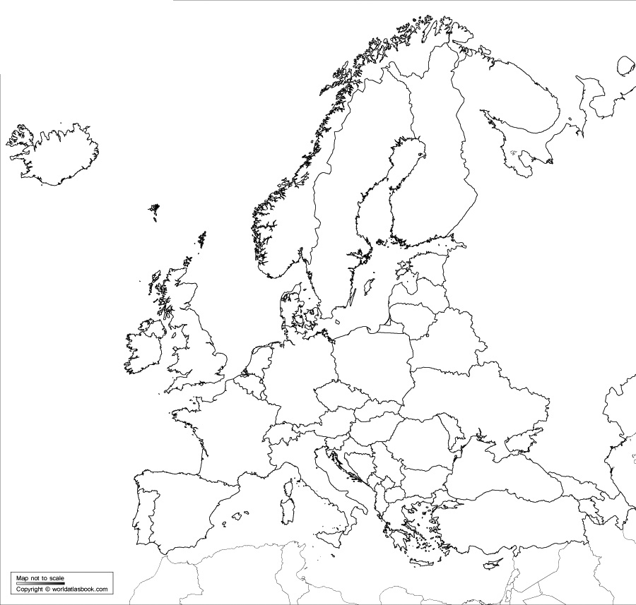

Standard VI
123
Medieval World
Atlantic Ocean
Mediterranean sea
Jenoa
Constatinople
$
$
Read the map. Identify and list out the countries where medieval
cities developed.
The newly developed European cities were the centres of
handicrafts and trade. The traders in these cities formed
associations called 'guilds'. Apart from traders, blacksmiths,
goldsmiths, leather workers, and carpenters also formed guilds.
Medieval European Cities
Nuremberg
$
$ Milan
Florence
Venice
$
$
Page 28

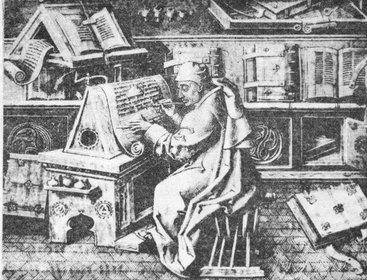

Social Science
124
Medieval World
The guilds fixed the prices and the quality of products and the
working hours of the labourers.
Knowledge and Art in Medieval Europe
In medieval Europe, knowledge and art attained remarkable
progress. Churches and monasteries were the major centres of
education. There were libraries attached to the monasteries.
Before the invention of printing technology, manuscripts of many
books were prepared and preserved in the monasteries.
Evaluate the role of the guilds in the economic life of medieval
Europe.
Preparing manuscripts - An illustration
Page 29

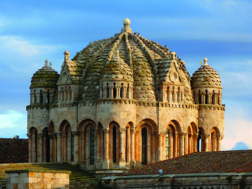
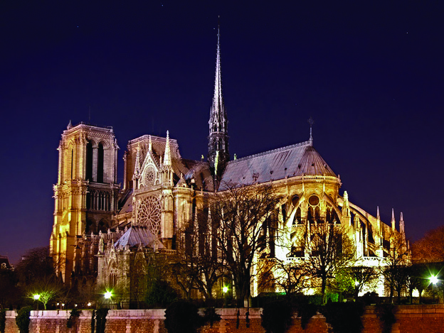
Standard VI
125
Medieval World
Architectural splendour of medieval Europe is evident in the
construction of churches. Arches and spacious interiors are the
features of the churches constructed during this period. This
style of architecture is known as the Romanesque style. A new
style of architecture known as the Gothic evolved by the 12th
century CE. Pointed towers are a major feature of this style.
Romanesque style
Gothic style
Medieval China and the Arab World
We have discussed medieval Europe. The Chinese and the Arabs
also made significant contributions in the fields of knowledge
and art during the medieval period.
Several universities functioned as centres of knowledge in
medieval Europe. Read the table below and identify them.
Universities
Oxford
Cambridge
Parma
Cordova
Italy
Spain
France
England
Pavia
Padua
Paris
Tulos
KT 631-3/Soc. Science 6 (E) Vol-2
Page 30

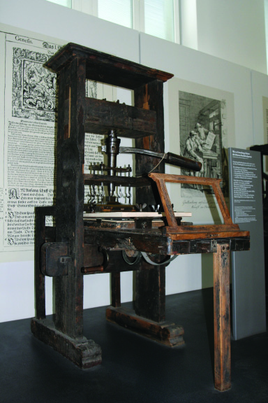
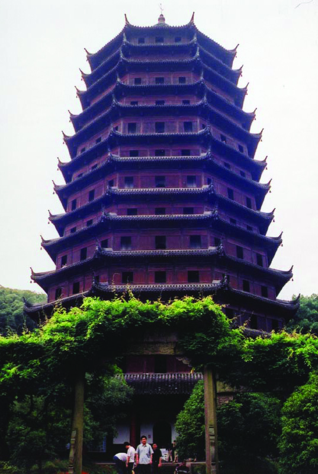

Social Science
126
Medieval World
The Chinese invented the printing machine and gun powder. The
Europeans acquired knowledge about these from the Chinese.
The printing technology helped the development of knowledge.
The mariner's compass, an instrument to find direction during
navigation is also a Chinese contribution.
They were excellent in architecture too. This is evident in the
construction of 'pagodas', the Buddhist centres of worship.
Complete the diagram with the Chinese contributions to
science, technology, and art during the medieval period.
Medieval
China
Printing machine
Chinese pagoda
Ancient printing machine
Page 31

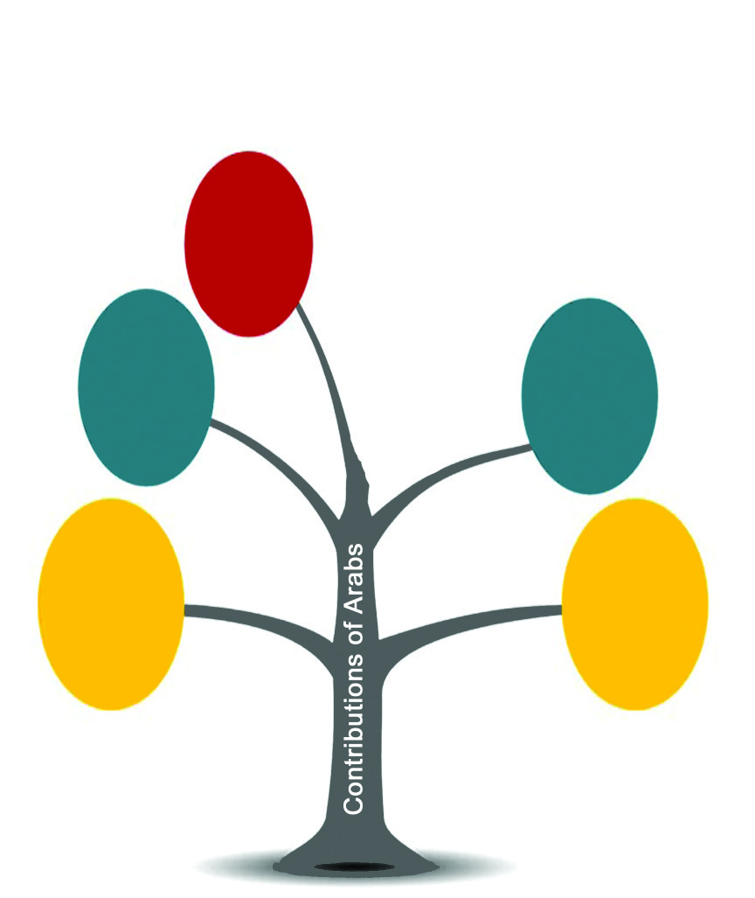

Standard VI
127
Medieval World
The significant contributions of the Arabs were in the fields of
science and literature. Al Razi and Ibn Sina were the scholars in
the field of medical science. Quitabul Hawi written by Al - Razi
is a work on medical science. Al Qanun is the work of Ibn Sina.
'Rubaiyat' of Omar Khayyam and 'Shahnama' written by Firdausi
are the remarkable literary works of the period. The famous 'One
Thousand and One Nights' (Arabian Nights) is another literary
contribution of the Arabs.
The Arabs acquired knowledge on science and technology that
originated in ancient India. They propagated it in Europe. The
concepts of zero and the decimal system are examples of these.
Complete the diagram that depicts the contributions of the Arabs
in the fields of science and literature.
.......................
Shahnama
.......................
Al Qanun
.................
One
Thousand
and One
Nights
Al-Razi
.......................
Omar
khayyam
.......................
Page 32

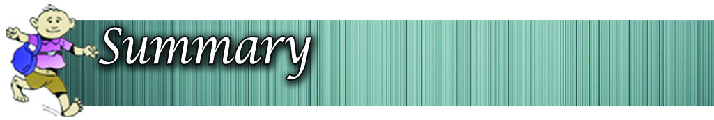
Social Science
128
Medieval World
We have discussed the major features of medieval Europe,
China, and Arabia. By the end of the medieval period, trade gained
prominence and this helped the spread of progress in the fields
of culture and knowledge to different parts of the world.
Medieval World
Medieval China
The Arabs
Medieval Europe
Features of
feudalism
Knowledge and
Art
Growth of
cities
Universities
Major
cities
Architecture
Romanesque, Gothic
Guilds
Printing
Gun powder
Mariner's Compass
Pagodas
Medical science
Al Razi
Ibn Sina
Literature
Omar Khayyam -
Rubaiyat
Firdausi - Shahnama
One Thousand and One
Nights
Feudalism is a socio-economic and political system that
evolved in medieval Europe.
The king occupied the highest stratum of the feudal social
hierarchy while the farmers populated the lowest stratum.
Many cities originated in Europe during the 11th century
CE.
Development of trade contributed to the emergence of
new cities.
Guilds were the assocaition of traders and craftsmen of
the medieval period.
Page 33


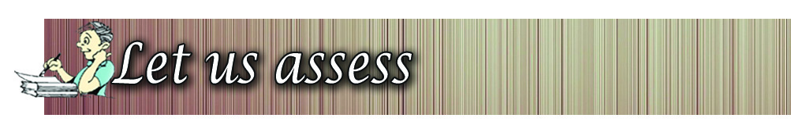
Standard VI
129
Medieval World
Several universities were established in medieval Europe
The Chinese and the Arabs made significant contributions
to the world in the fields of science and literature.
The learner
explains the major features of the feudal system.
explains the background that led to the origin of cities in
Europe during the medieval period.
lists out the cities that developed in Europe during the
medieval period.
explains the progress in education during the medieval
period.
recognises the cultural progress and achievements of the
Chinese and the Arabs during the medieval period.
Which were the various strata of the feudal society?
Examine the life of the farmers in the feudal society.
Analyse the role of trade in the development of medieval
cities.
What are the features of the churches constructed during
the medieval period?
Explain the significant achievements of the Arabs in the
field of science and literature.
Prepare a note on the contribution of the Chinese in the
field of science and technology.
Page 34


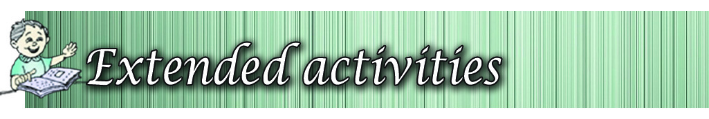
Social Science
130
Medieval World
Match the items in column A with the items in column B
A
B
Italy
Cordova
China
Shahnama
Spain
Jenoa
Al Razi
Printing technology
Firdausi
Quitabul Hawi
Prepare a chart showing various strata of the feudal social
hierarchy and their features. Exhibit it in the Social Science
lab.
Locate in a world map the countries where medieval cities
originated and colour them.
Collect and read 'One Thousand and One Nights' from your
school library.
Completely
Partially
Need
improvement
Can identify the various strata in the
feudal society.
Can analyse the plight of the farmers in
the feudal system.
Can list the universities that originated
during the medieval period.
Can evaluate the achievements of the
Arabs and the Chinese in the field of
science and literature.
Self assessment
Self assessment
Self assessment
Self assessment
Self assessment